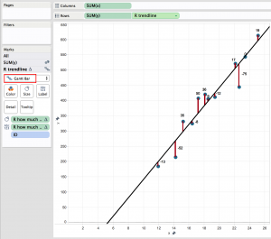

<?xml version="1.0" encoding="UTF-8"?><rss version="2.0"
	xmlns:content="http://purl.org/rss/1.0/modules/content/"
	xmlns:wfw="http://wellformedweb.org/CommentAPI/"
	xmlns:dc="http://purl.org/dc/elements/1.1/"
	xmlns:atom="http://www.w3.org/2005/Atom"
	xmlns:sy="http://purl.org/rss/1.0/modules/syndication/"
	xmlns:slash="http://purl.org/rss/1.0/modules/slash/"
	>

<channel>
	<title>InterWorks - Tableau Software &#38; Business Intelligence Consulting</title>
	<atom:link href="http://interworks.co.uk/feed/" rel="self" type="application/rss+xml" />
	<link>http://interworks.co.uk/</link>
	<description>InterWorks - Tableau Software &#38; Business Intelligence Consulting</description>
	<lastBuildDate>Fri, 26 Jun 2015 08:09:24 +0000</lastBuildDate>
	<language>en-US</language>
	<sy:updatePeriod>hourly</sy:updatePeriod>
	<sy:updateFrequency>1</sy:updateFrequency>
	
	<item>
		<title>Hot Topics: Best Practices for Data Connections</title>
		<link>http://interworks.co.uk/blog/hot-topics-best-practices-for-data-connections/</link>
		<comments>http://interworks.co.uk/blog/hot-topics-best-practices-for-data-connections/#comments</comments>
		<pubDate>Fri, 05 Jun 2015 08:30:22 +0000</pubDate>
		<dc:creator><![CDATA[Darren Evans]]></dc:creator>
				<category><![CDATA[Blog]]></category>
		<category><![CDATA[data connection]]></category>
		<category><![CDATA[data preparation]]></category>
		<category><![CDATA[Tableau]]></category>
		<category><![CDATA[Tableau 9.0]]></category>

		<guid isPermaLink="false">http://interworks.co.uk/?p=12406</guid>
		<description><![CDATA[<p>Working on the InterWorks Expert Hotline I come into contact with many clients every day assisting them with all aspects of their Tableau deployment from data preparation to best practice dashboard design all the way through to complex table calculations and Tableau Server tuning. This new series of blogs will pick up hot topics that are commonly [&#8230;]</p>
<p>The post <a rel="nofollow" href="../blog/hot-topics-best-practices-for-data-connections/index.html">Hot Topics: Best Practices for Data Connections</a> appeared first on <a rel="nofollow" href="../index.html">InterWorks - Tableau Software &amp; Business Intelligence Consulting</a>.</p>
]]></description>
				<content:encoded><![CDATA[<p>Working on the <a href="http://www.interworks.co.uk/hotline">InterWorks Expert Hotline</a> I come into contact with many clients every day assisting them with all aspects of their Tableau deployment from data preparation to best practice dashboard design all the way through to complex table calculations and Tableau Server tuning. This new series of blogs will pick up hot topics that are commonly seen during hotline bookings and share that knowledge with our wider customer base. This blog will look at best practices for data connections.</p>
<p>Having a strong foundation is instrumental to the success of any development project and developing BI solutions in Tableau is no exception to this.</p>
<p>A common issue with Tableau deployments is performance degradation manifested in poor data connection design.</p>
<p>This blog will take a look at a 12 step set of best practices that will ensure that all data connections are initially set up for optimum development speed and then configured for best possible performance when the report is ready for production use.</p>
<p>To help look at the potential for performance issues I have created a ‘big’ view against the Microsoft SQL Server AdventureWorks2014 database. This view has 100 columns and 12.4 million rows. This is not enormous compared to some of the databases that we experience in the real world setting, however the performance gains that are demonstrated will scale against larger databases and deliver significant gain to both the Tableau developers and the audience.</p>
<p>I have connected Tableau to this view without performing any data maintenance and then created an extract. I have then produced a straightforward dashboard showing some sales data.</p>
<p><a href="https://public.tableau.com/profile/darren.evans#!/vizhome/BlogDatasets/AdventureWorksSalesDashboard"></a></p>
<p>Using the Workbook Tools Performance Monitoring I have then carried out a set of actions and filters against the dashboard and recorded the execution times in seconds for these which are shown below:</p>
<p><a href="../wp-content/uploads/2015/05/Screen-Shot-2015-05-29-at-09.06.22.png"></a></p>
<p>The Workbook tools are a component of the <a href="http://powertoolsfortableau.com/" target="_blank">Power Tools for Tableau</a> suite of applications that allow for analysis and automated changes to be made to Tableau Workbooks and Server files. These tools can save you many hours on the administration of your Tableau environment. For more information see <a title="http://interworks.co.uk/business-intelligence/tableau-tools/" href="../business-intelligence/tableau-tools/index.html">http://interworks.co.uk/business-intelligence/tableau-tools/</a></p>
<p>The final test I carried out was the record the time taken to build the extract which came in at a 2508 seconds or a little over 41 minutes.</p>
<p>I will now run through my 12 steps for best practice data connection development. During this I will produce two additional data connections; an optimised development data connection and a production data connection. I will then carry out the same benchmark tests as before and compare the timings.</p>
<p><strong>12 Steps for Data Connection Development<br />
</strong><br />
These are the 12 steps that I follow each time I start out on a development project in Tableau.</p>
<p>These steps ensure that at whatever stage the dashboards are at in terms of development they are as responsive as possible.</p>
<p><em>1 Build the data connection</em></p>
<p>The first stage is the initial connection to the underlying data source. In this case the data connection is a SQL Server view (see attached SQL File). The file is made up of 75 Dimensions and 25 measures and has 12.5 million rows of data.</p>
<p><em>2 Review all fields</em></p>
<p>Review all the fields in the data connection and ensure that they are set correctly to either Dimension or Measure and have the correct data types applied.</p>
<p><a href="../wp-content/uploads/2015/05/Screen-Shot-2015-05-29-at-09.06.41.png"></a></p>
<p><em>3 Hide all non applicable fields</em></p>
<p>This is an important early step. You need to identify all the fields in your data connection that you will never use during analysis. There will be i) some fields that will definitely be required, and ii) a selection of fields which may be considered during the build but you are unsure about, and iii) the fields that will never be used. These are the fields that should be removed at this stage.</p>
<p>For this step you can use the main data connection editor window or the meta data manager screen. However I find it is easier to go to a blank worksheet and multi select (ctrl click) all the fields not required from the dimensions and measures shelf, you can then right-click and hide these fields.</p>
<p><a href="../wp-content/uploads/2015/05/Screen-Shot-2015-05-29-at-09.06.52.png"></a></p>
<p>The time at which fields are hidden makes a big difference in Tableau. If you hide fields in a connection with an active data extract the field is only hidden from you in Tableau Desktop. If you hide them before you extract, Tableau will remove them from the query that it uses to pull the data and it will not be pulled in at all. This results in fewer columns in the query and the resulting extract meaning a faster extract speed and better performance as a result.</p>
<p><em>4 Apply Long Term Filters</em></p>
<p>When you click to generate the extract you can apply filters. This limits the data brought into the extract. Some filters will be long term (permanent) filters. For example if you are only producing this report for a rolling 2 years then a filter can be applied to remove all other data. The same is true if the report is only for specific locale or business division as the non applicable data can be removed permanently. All of these will limit the row count and provide performance benefit.</p>
<p><a href="../wp-content/uploads/2015/05/Screen-Shot-2015-05-29-at-09.07.04.png"></a></p>
<p><em>5 Apply Short Term Filters</em></p>
<p>These are filters applied only for development. For example If I limit the development report to only two products or the top 100 products out of a possible xxx and also only include 2 months per year this will allow me to pull in a dramatically smaller dataset making extract creation quicker and giving the me maximum speed during development.</p>
<p>I will quite often only produce reports on a small subset of data, 1 week for example, to give me this speed during development and also give me a subset of data to get signed off as accurate.</p>
<p>In this example I am limiting the data to the first 2 days of each month only</p>
<p><em>6 Build Development Extract</em></p>
<p>I can now run the extract build. With reduced rows and columns I would expect this to be quicker.</p>
<p>And it has &#8211; 89 seconds compared to 2508 seconds. This is considerable when scaled against larger datasets.</p>
<p><em>7 Build The Dashboards</em></p>
<p>Now I can go ahead and build my dashboards against this development set.</p>
<p><a href="../wp-content/uploads/2015/05/Screen-Shot-2015-05-29-at-09.07.20.png"></a></p>
<p>At this point I now have a signed off dashboard sitting on a development data connection and it is time to build a Production Data Connection.</p>
<p><em>8 Remove the Extract</em></p>
<p>I start by removing my development extract. Navigate to a blank sheet so that Tableau does not try to process live data, right click on the data connection and delete the extract.</p>
<p><em>9 Hide all unused fields</em></p>
<p>Next up I can use the hide unused fields option. Click on the menu on the dimensions shelf and choose the hide unused fields option.</p>
<p><a href="../wp-content/uploads/2015/05/Screen-Shot-2015-05-29-at-09.07.31.png"></a></p>
<p>As it says on the tin this option will look for all dimensions and measures not being used anywhere in the workbook and hide them. This will have a dramatic effect on the speed of the extract as it is reducing the column size considerably.</p>
<p>Based on my dashboard design I would be left with just 8 fields from the underlying dataset. A massive reduction from the 100 columns in the initial view.</p>
<p><a href="../wp-content/uploads/2015/05/Screen-Shot-2015-05-29-at-09.07.46.png"></a></p>
<p><em>10 Remove development filters and apply new long term filters</em></p>
<p>I now need to review my filters removing any filters applied only for development. I also may have determined new long term filters that can be applied.</p>
<p><em>11 Extract Data</em></p>
<p>I am now in the position to extract the data and build my production dataset.</p>
<p>An extra step I would consider here is to aggregate visible dimensions. What this option does is truncate all date fields to a fixed level (for example year or month) and then sums up all measure fields grouping by the remaining dimensions. For example AdventureWorks has all dates at day level, in this dataset if a product was sold every day in January 2015 then there would be a row of data for this product on every day in January 2015 with a sales value. What aggregate visible dimensions would do is return a single line for the whole month (no days) along with the product ID and the total sales amount for all days. For a single product in a single month this would save 30 rows in our dataset. Spread out across the whole view this could be a considerable time saver for the end user. One thing to bear in mind is that using this will remove the dates from the dataset restricting the analysis that could take place which is why I suggest it as a final enhancement if your time series is all at a high date level (i.e month). The extract will also be slower to generate as the query required to fetch the data will be more complex.</p>
<p>Using aggregate visible dimensions against my production dataset to return all dates at month level reduced the row count from 7,444,201 rows to 2,183,256. If all my time series analysis was only required at month level this would be an excellent design choice for end user experience.</p>
<p>For the purpose of this blog I chose not to aggregate the dimensions as I wanted to compare the original dataset to an optimised dataset at day level.</p>
<p>As I am now pulling all the rows of data into the extract but a significantly reduced column count. This resulted in a 321 second extract time, more than the development data source but a lot less than than the initial data connection.</p>
<p><em>12 Optimize Extract</em></p>
<p>Once the data has been extracted I can now run an optimisation by clicking on the option contained within the data menu and the extract sub menu. This will create a secondary structure inside the actual extract file materialising the results of some calculated fields and also creating views for the filters to query so that they do not have to run against the whole dataset.</p>
<p><strong>The Results<br />
</strong><br />
To demonstrate the advantages of efficient data connections I carried out a set of benchmark tests on each workbook I created.</p>
<p><strong>Extract Refresh times<br />
</strong><br />
Each workbook was uploaded to Server and the extract refresh time recorded.</p>
<p><a href="../wp-content/uploads/2015/05/Screen-Shot-2015-05-29-at-09.07.56.png"></a></p>
<p>This makes it pretty clear that amending the data connection reduced extract refresh time considerably. The best extract refresh time was for Development running at just under 1.5 minutes compared to the 42 minutes the original workbook took to refresh. This quick extract time would be of great benefit during a development cycle as changes can be made to the data connection without the need to wait for the extract to fully rebuild.</p>
<p>The production connection extracting in 321 seconds saw an improvement of over 35 minutes when compared with the original despite containing the same number of rows. As I did not apply any additional data filters this is purely down to the removal of most of the columns during the production data set build.</p>
<p><strong>Benchmark Testing<br />
</strong><br />
The Workbook Tools for Tableau have a tool called <a href="http://powertoolsfortableau.com/tools/workbook-tools-suite/#wc-section" target="_blank">Performance Analyzer</a>. This tool opens a Tableau workbook and records timings for all processing carried out by Tableau including the load time for opening the workbook, all interactions and filter applications.</p>
<p><a href="../wp-content/uploads/2015/05/Screen-Shot-2015-05-29-at-09.08.02.png"></a></p>
<p>In order to assess the benefit of the data connection best pracrice steps I drew up a list of benchmark tests and carried out the same tests on the original, development and production workbooks.</p>
<p>Here is a summary of the results.</p>
<p><a href="../wp-content/uploads/2015/05/Screen-Shot-2015-05-29-at-09.08.08.png"></a></p>
<p>The results show exactly what I anticipated. The best results are for the development dataset which contained a very small number of rows and a reduced column count. The Production dataset has significant performance improvement over the original data connection also.</p>
<p>Here are two key benchmark areas in more detail:</p>
<p><a href="../wp-content/uploads/2015/05/Screen-Shot-2015-05-29-at-09.08.23.png"></a></p>
<p>The load time when opening the Tableau Workbook file is dramatically reduced for the Production workbook when compared to the original workbook loading an impressive 61% faster.</p>
<p><a href="../wp-content/uploads/2015/05/Screen-Shot-2015-05-29-at-09.08.34.png"></a></p>
<p>Grouping all the action filter benchmark tests and computing the average also shows that there is also a significant performance gain here -16% on execution time over the original workbook.</p>
<p>I hope that this blog has been useful. Good data connection design has a positive impact on the developer as the time to execute tasks and make data-connection changes can be considerable. Taking the time to create a development data connection makes for fast intuitive data discovery. Once the report is finalised removing all non-required columns and rows will provide the audience with the best possible user experience.</p>
<p>Here is a cheat list for the 12 Best Practice Steps:</p>
<p><em><strong>Build Development Data Connection</strong></em></p>
<p><em>1 Build the data connection</em><br />
<em> 2 Review all fields</em><br />
<em> 3 Hide all non applicable fields</em><br />
<em> 4 Apply Long Term Filters</em><br />
<em> 5 Apply Short Term Filters</em><br />
<em> 6 Build the Development Extract</em><br />
<em> 7 Build Dashboards</em></p>
<p><em><strong>Build Production Data Connection</strong></em></p>
<p><em>8 Remove the Extract</em><br />
<em> 9 Hide all unused fields</em><br />
<em> 10 Remove development filters and add any new long term filters</em><br />
<em> 11 Extract Data</em><br />
<em> 12 Optimise Extract</em></p>
<p>All performance monitoring for this blog was carried out using Power Tools for Tableau. The tools can significantly improve maintaining your BI environment and are available on a full featured trial license. <a title="http://interworks.co.uk/business-intelligence/tableau-tools/" href="../business-intelligence/tableau-tools/index.html">http://interworks.co.uk/business-intelligence/tableau-tools/</a></p>
<p>The post <a rel="nofollow" href="../blog/hot-topics-best-practices-for-data-connections/index.html">Hot Topics: Best Practices for Data Connections</a> appeared first on <a rel="nofollow" href="../index.html">InterWorks - Tableau Software &amp; Business Intelligence Consulting</a>.</p>
]]></content:encoded>
			<wfw:commentRss>http://interworks.co.uk/blog/hot-topics-best-practices-for-data-connections/feed/</wfw:commentRss>
		<slash:comments>0</slash:comments>
		</item>
		<item>
		<title>Using Tableau on your Mobile</title>
		<link>http://interworks.co.uk/blog/using-tableau-on-your-mobile/</link>
		<comments>http://interworks.co.uk/blog/using-tableau-on-your-mobile/#comments</comments>
		<pubDate>Wed, 27 May 2015 10:55:32 +0000</pubDate>
		<dc:creator><![CDATA[Rob Austin]]></dc:creator>
				<category><![CDATA[Blog]]></category>
		<category><![CDATA[Mobile]]></category>
		<category><![CDATA[Rob Austin]]></category>
		<category><![CDATA[Tableau]]></category>

		<guid isPermaLink="false">http://interworks.co.uk/?p=12345</guid>
		<description><![CDATA[<p>I have been using Tableau since version 4, initially as a Tableau customer. One of the first things I wanted was to be able to see my data on the move. I didn&#8217;t want to see everything, just the basics, a list of green ticks showing me everything was OK back in the office, or the [&#8230;]</p>
<p>The post <a rel="nofollow" href="../blog/using-tableau-on-your-mobile/index.html">Using Tableau on your Mobile</a> appeared first on <a rel="nofollow" href="../index.html">InterWorks - Tableau Software &amp; Business Intelligence Consulting</a>.</p>
]]></description>
				<content:encoded><![CDATA[<p>I have been using Tableau since version 4, initially as a Tableau customer. One of the first things I wanted was to be able to see my data on the move. I didn&#8217;t want to see everything, just the basics, a list of green ticks showing me everything was OK back in the office, or the ability to interrogate if not.</p>
<p>Tableau has come on a long way since v4 and there are many bespoke interactive features for mobile / iPad. The purpose of this article is to point you towards best practice when designing a mobile dashboard rather than listing out the features. Please note I am focusing on Tableau on your mobile rather than a tablet (if you use a phone with a screen that is somewhere in between mobile &amp; tablet then I can&#8217;t help you &#8230;. and you probably look like an 80s yuppie when you are making calls).</p>
<p>Tableau has the ability to size automatically but this won&#8217;t usually help you when it comes to mobile screens as the result will be squashed vizzes and missing text.</p>
<p>I was asked once if Tableau would re-organise your dashboard automatically for mobile and the current v9 answer is &#8216;no, you would need to build a second dashboard&#8217; (which is no bad thing). If you consider the amount of time taken to obtain, collate, clean and validate your data before dashboarding I believe that as a dashboard designer you have a responsibility to make the dashboard look as good as possible, only that way do you do justice to your team (and yourself). Dashboarding in Tableau probably represents about 5% of the total project duration but that is all the end user sees so it is worth the bit of extra effort to create a dashboard tailored for mobile.</p>
<p>If you are reading this on a desktop / laptop it may be a good idea to open the dashboard below on your mobile to check out the interface as you go:<br />
<a title="http://public.tableau.com/profile/rob.austin#!/vizhome/MobileDemo/MobileDashboard" href="http://goo.gl/q5HmmW" target="_blank">http://goo.gl/q5HmmW</a></p>
<hr />
<p>&nbsp;</p>
<p style="text-align: justify;">Tip 1: Design your mobile dashboard for the smallest screen size you will want to use. Create the dashboard 1 worksheet wide with the ability to scroll if necessary rather than trying to tile worksheets.</p>
<div class="ezcol ezcol-three-fifth"><script src="https://public.tableau.com/javascripts/api/viz_v1.js" type="text/javascript"></script></p>
<div class="tableauPlaceholder" style="width: 324px; height: 1029px;"><noscript>&amp;amp;amp;amp;amp;amp;amp;lt;a href=&#8217;#&#8217;&amp;amp;amp;amp;amp;amp;amp;gt;&amp;amp;amp;amp;amp;amp;amp;lt;img alt=&#8217;Cover Dashboard (Mobile) &#8216; src=&#8217;https:&amp;amp;amp;amp;amp;amp;amp;amp;#47;&amp;amp;amp;amp;amp;amp;amp;amp;#47;public.tableau.com&amp;amp;amp;amp;amp;amp;amp;amp;#47;static&amp;amp;amp;amp;amp;amp;amp;amp;#47;images&amp;amp;amp;amp;amp;amp;amp;amp;#47;Mo&amp;amp;amp;amp;amp;amp;amp;amp;#47;MobileDemo&amp;amp;amp;amp;amp;amp;amp;amp;#47;MobileDashboard&amp;amp;amp;amp;amp;amp;amp;amp;#47;1_rss.png&#8217; style=&#8217;border: none&#8217; /&amp;amp;amp;amp;amp;amp;amp;gt;&amp;amp;amp;amp;amp;amp;amp;lt;/a&amp;amp;amp;amp;amp;amp;amp;gt;</noscript><object class="tableauViz" style="display: none;" width="324" height="1029"><param name="host_url" value="https%3A%2F%2Fpublic.tableau.com%2F" /><param name="site_root" value="" /><param name="name" value="MobileDemo/MobileDashboard" /><param name="tabs" value="no" /><param name="toolbar" value="yes" /><param name="static_image" value="https://public.tableau.com/static/images/Mo/MobileDemo/MobileDashboard/1.png" /><param name="animate_transition" value="yes" /><param name="display_static_image" value="yes" /><param name="display_spinner" value="yes" /><param name="display_overlay" value="yes" /><param name="display_count" value="yes" /><param name="showVizHome" value="no" /><param name="showTabs" value="n" /><param name="bootstrapWhenNotified" value="true" /></object></div>
</div>
<div class="ezcol ezcol-two-fifth ezcol-last">
<p style="text-align: justify;">Tip 2: Include an icon (worksheet with action filter) to / from the original dashboard, this lets people know that it is accessible on their mobile too.</p>
<p style="text-align: justify;">Tip 3: Filters are all in one place at the start of the dashboard</p>
<p style="text-align: justify;">Tip 4: Start high level but give the ability to drill, the bars use a hierarchy and the word &#8216;drill&#8217; to alert the user to this functionality.</p>
<p style="text-align: justify;">Tip 5: Declutter wherever possible, I have removed tooltips from the high level view and replaced with labels which appear when selected.</p>
<p style="text-align: justify;">Tip 6: Make the dashboard the same width (and height) as the smallest mobile screen. (320w x 480h)</p>
<p style="text-align: justify;">Tip 6a: If you can&#8217;t do this because there is too much info then create a scroll bar (blank text box with a border) on the right hand side so that the user always has somewhere to grab &amp; pull. This is particularly important if you are using a map as Tableau will prioritise the panning of the map view.</p>
<p style="text-align: justify;">Tip 6b: Use Action filters to create drop-downs so that you can easily get to the view(s) that you need. This can be done in combination with layout containers to maximise the available space.</p>
</div>
<div class="ezcol-divider"></div>
<hr />
<p>&amp; here&#8217;s how each of the tips are implemented:</p>
<div class="ezcol ezcol-two-third">
<p><strong>Tip 1:</strong> Set the dashboard size to fit your mobile screen, or at least the width if you are using a scroll bar (320 x 960 in this case). You get to this at the bottom left of the dashboard sheet.</div>
<div class="ezcol ezcol-one-third ezcol-last"><a href="../wp-content/uploads/2015/05/Screen-Shot-2015-05-26-at-16.37.16.png"></a></div>
<div class="ezcol-divider"></div>
<p><strong>Tip 2:</strong> Include an icon to go between mobile and full dashboard. This is done as follows</p>
<p style="padding-left: 30px;"><span style="font-size: small;"><em>1: In a new worksheet create a calculated field called [Go to full]  with the content &#8216;Go To&#8217; or similar.</em><br />
<em> 2: Set the mark type to Shape and put the new field in the Shape Dropzone, customise the shape.</em><br />
<em> 3: Put your new worksheet in your dashboard and create an action filter.</em><br />
<em> 4: Set the current sheet to be the Source Sheet and select the new worksheet as a source</em><br />
<em> 5: Set the destination dashboard as the Target sheet and leave all sheets selected</em><br />
<em> 6: Run Action on Select, clearing selection will &#8216;Show All Values&#8217;</em><br />
<em> 7: Target Filters = &#8216;Selected Fields&#8217; but leave the list blank, this will transport you to the other dashboard without applying any filters.</em><br />
</span></p>
<p><strong>Tip 3:</strong> Drag a horizontal layout container on to your dashboard and put all your quick filters in there. Make sure you select a dropdown option on the quick filter to minimise the space.</p>
<p><strong>Tip 4:</strong> Use a hierarchy and drill option to allow the users to expand the view as necessary.</p>
<p style="padding-left: 30px;"><span style="font-size: small;"><em>1: Create a new Calculated Field called [drill] and add the content &#8216;drill&#8217;</em><br />
<em> 2: Use the ctrl key to multi select your top level field, detail level field and [drill], right click and create a hierarchy. Arrange the hierarchy so that drill is in the middle.</em><br />
<em> 3: Go to Analysis &gt; Table Layout &gt; Advanced and set the Maximum levels of row labels to 2, set the maximum levels of horizontal row labels to 1. This will rotate the high level field labels when you drill down. When you test the operation of this on a mobile it works really nicely through the tooltip menu, it also allows you to drill up in the same way.</em><br />
</span></p>
<p><strong>Tip 5:</strong> You can add the labels on the marks card and then set them to appear when selected (rather than all the time). Make sure you switch off the tooltips (Worksheet &gt; Tooltip&#8230;)</p>
<p><strong>Tip 6a:</strong> To create a faux-scrollbar drag a text box on to the far right of your dashboard, from there you can format it, use either a border or fill depending on the look / feel of your dashboard.</p>
<p><strong>Tip 6b:</strong> The point of a dashboard is to get the relevant information in one place, which is tricky on a small screen. By allowing your audience to show / hide panels you can give them the best chance of fitting what they want on the screen.</p>
<p style="padding-left: 30px;"><span style="font-size: small;"><em>1: Create a new worksheet (called Map Title in this case)</em><br />
<em> 2: Create a new calculated field called [Map] containing the content &#8216;Map&#8217;.</em><br />
<em> 3. Change the mark type to Shape, drop the [Map] field in to shape and change it to a down arrow.</em><br />
<em> 4: Add [Map] to rows and hide the field labels.</em><br />
<em> 5: Repeat steps 1 &#8211; 4 for your other sheets (Timeline in this case)</em><br />
<em> 6: Drag a vertical layout container on to your dashboard and add all the worksheets you want to show / hide in to it. (I have added my high level sheet as well to give it room to expand when drilling).</em><br />
<em> 7: Add your new &#8216;title&#8217; worksheets to the dashboard. I have added these ones in a horizontal layout container next to a blank for alignment.</em><br />
<em> 8: Create an action filter where the source sheet is your &#8216;title&#8217; and the target is the viz you want to hide. Make sure you run on &#8216;select&#8217; and &#8216;Exclude all values&#8217; upon clearing the selection. Repeat this step for your other hide-able sheets.</em><br />
</span></p>
<p>Thanks for reading, you now have the power of Tableau on your mobile &amp; in your pocket.</p>
<hr />
<p>&nbsp;</p>
<p>&nbsp;</p>
<p>&nbsp;</p>
<p>The post <a rel="nofollow" href="../blog/using-tableau-on-your-mobile/index.html">Using Tableau on your Mobile</a> appeared first on <a rel="nofollow" href="../index.html">InterWorks - Tableau Software &amp; Business Intelligence Consulting</a>.</p>
]]></content:encoded>
			<wfw:commentRss>http://interworks.co.uk/blog/using-tableau-on-your-mobile/feed/</wfw:commentRss>
		<slash:comments>0</slash:comments>
		</item>
		<item>
		<title>Tableau Release Notes Made Easy &#8211; The Future Is Here</title>
		<link>http://interworks.co.uk/blog/tableau-release-notes-made-easy-the-future-is-here/</link>
		<comments>http://interworks.co.uk/blog/tableau-release-notes-made-easy-the-future-is-here/#comments</comments>
		<pubDate>Fri, 08 May 2015 21:10:13 +0000</pubDate>
		<dc:creator><![CDATA[Fabian Zimmer]]></dc:creator>
				<category><![CDATA[Blog]]></category>
		<category><![CDATA[Release Notes]]></category>
		<category><![CDATA[Search]]></category>
		<category><![CDATA[Tableau]]></category>

		<guid isPermaLink="false">http://interworks.co.uk/?p=12295</guid>
		<description><![CDATA[<p>I am going to start off this blog post with a simple assumption: if you have used Tableau for a while, chances are you&#8217;ve read through the release notes on Tableau&#8217;s website. You were either checking if an issue you&#8217;re experiencing has been addressed in a later update, or whether Tableau has implemented any cool new [&#8230;]</p>
<p>The post <a rel="nofollow" href="../blog/tableau-release-notes-made-easy-the-future-is-here/index.html">Tableau Release Notes Made Easy &#8211; The Future Is Here</a> appeared first on <a rel="nofollow" href="../index.html">InterWorks - Tableau Software &amp; Business Intelligence Consulting</a>.</p>
]]></description>
				<content:encoded><![CDATA[<p>I am going to start off this blog post with a simple assumption: if you have used Tableau for a while, chances are you&#8217;ve read through the release notes on Tableau&#8217;s website. You were either checking if an issue you&#8217;re experiencing has been addressed in a later update, or whether Tableau has implemented any cool new features.</p>
<p>Until now, you&#8217;ve had to manually navigate through all the notes on a single page per version, which can be a bit of a bummer. What it made impossible, too, was searching for keywords across release notes of multiple versions. Fret not, help is here.</p>
<p>This visualisation pulls together all release notes of the most recent versions, and beautifully displays them all on a single page. Use the wildcard filter to search across all of them, segment them by categories, and see how many features or fixes were released over time.</p>
<p>&nbsp;</p>
<p><a href="https://public.tableau.com/views/TableauReleaseNotes/ReleaseNotes?:embed=y&amp;:showTabs=y&amp;:display_count=yes"></a></p>
<p style="text-align: center;"><em>Click the image to view the visualisation on Tableau Public.</em></p>
<p style="text-align: left;">Did you find this useful? Let us know in the comments section and keep tuned for more blog posts covering the most interesting topics on Tableau. If you have any questions, please feel free to send me an <a href="mailto:fabian.zimmer@interworks.eu" target="_blank">email</a> or, if you’re ready to download Tableau, <a href="../business-intelligence/download-tableau-desktop-free-trial.1" target="_blank">click here</a> to get started on a free 14 day trial!</p>
<p>The post <a rel="nofollow" href="../blog/tableau-release-notes-made-easy-the-future-is-here/index.html">Tableau Release Notes Made Easy &#8211; The Future Is Here</a> appeared first on <a rel="nofollow" href="../index.html">InterWorks - Tableau Software &amp; Business Intelligence Consulting</a>.</p>
]]></content:encoded>
			<wfw:commentRss>http://interworks.co.uk/blog/tableau-release-notes-made-easy-the-future-is-here/feed/</wfw:commentRss>
		<slash:comments>0</slash:comments>
		</item>
		<item>
		<title>The Fight of the Century &#8211; Manny Pacquiao vs Floyd Mayweather</title>
		<link>http://interworks.co.uk/blog/the-fight-of-the-century/</link>
		<comments>http://interworks.co.uk/blog/the-fight-of-the-century/#comments</comments>
		<pubDate>Thu, 30 Apr 2015 14:31:32 +0000</pubDate>
		<dc:creator><![CDATA[Alastair Young]]></dc:creator>
				<category><![CDATA[Blog]]></category>
		<category><![CDATA[blog]]></category>
		<category><![CDATA[boxing]]></category>
		<category><![CDATA[Tableau]]></category>
		<category><![CDATA[visualisation]]></category>

		<guid isPermaLink="false">http://interworks.co.uk/?p=12253</guid>
		<description><![CDATA[<p>Manny Pacquiao versus Floyd Mayweather T-Minus 2 Days&#8230; (probably less if you read this before I update this countdown again!) The Training Camps are almost complete and the tapering down is in progress&#8230;. The Weigh-In is just around the corner which marks the Grand Finale in terms of preparations before the Main Event itself &#8211; &#8220;The Fight [&#8230;]</p>
<p>The post <a rel="nofollow" href="../blog/the-fight-of-the-century/index.html">The Fight of the Century &#8211; Manny Pacquiao vs Floyd Mayweather</a> appeared first on <a rel="nofollow" href="../index.html">InterWorks - Tableau Software &amp; Business Intelligence Consulting</a>.</p>
]]></description>
				<content:encoded><![CDATA[<p style="text-align: center;">Manny Pacquiao versus Floyd Mayweather</p>
<p>T-Minus 2 Days&#8230; (probably less if you read this before I update this countdown again!)</p>
<p>The Training Camps are almost complete and the tapering down is in progress&#8230;.</p>
<p>The Weigh-In is just around the corner which marks the Grand Finale in terms of preparations before the Main Event itself &#8211; &#8220;The Fight of the Century&#8221;</p>
<p><a title="Click to open in new window" href="https://public.tableau.com/profile/alastair.young#!/vizhome/MayweatherVsPacquiao-PathstotheFightoftheCentury/FightoftheCentury" target="_blank"></a></p>
<h6 style="text-align: center;">(Please click on the picture above to take you through to the live Dashboard hosted on Tableau Public)</h6>
<p>For 6+ years, boxing fans from across the globe have waited for this fight to happen. The endless and tedious, &#8216;Will-they Won&#8217;t-they&#8217; conundrum rattled on and on, far longer than anyone expected, and far longer than it ever should have. New discussions, new demands, purse agreements, drug testing, fight weight, glove weight&#8230;. All topics that in one way or another contributed to the fight not happening until now. With all this, the title of &#8216;The Best Pound-for-Pound Fighter in the World&#8217; is about to be decided either way and just to make it a little more interesting, let&#8217;s throw in the estimated $350 million in revenue it is likely to generate. It&#8217;s now quite easy to see why everyone is dubbing this &#8216;The Fight of the Century&#8217;.</p>
<p>Whoever wins &#8211; this has been the most hyped boxing match in recent years and rightly so. Neither fighter needs the money&#8230; but boxing as a sport needs this more than anything. Gone are days of the regular Big Fight Weekends.</p>
<p>Nothing will surprise its audience (apart from those at ringside whose pockets must feel considerably lighter). We all know each fighter&#8217;s capabilities, and are intrigued about both of their tactics going into the spectacle. Everyone has their favourite&#8230; it&#8217;s now just a case of who will WIN?</p>
<p>Mayweather is the supreme fighter with an unblemished professional record of 47-0-0 but&#8230; can he cope with Pacquiao&#8217;s speed? Can he take Pacquiao&#8217;s volume of punches? Can he continue to deal with the pressure of an undefeated record and the possibility of hitting the mat? &#8211; And is he past his prime?</p>
<p>Pacquiao in his own right is a phenomenal fighter. A sanctioned World Champion over 6 weight divisions throughout his career, but with some blemishes on 57-5-2 record. Have past defeats made him a better fighter? Can he play the long game against Mayweather? Can his speed and stance cause Mayweather to crumble? And is he past his prime?</p>
<p>With Mayweather currently favourite at odds of 1/2 and Pacquiao at odds of 2/1 to win outright, this is the closest and best odds for a Mayweather fight in recent years. Looking at the odds for an early stoppage (KO,TKO or DQ), Pacquiao is now favourite at 5/1 vs Mayweather at 13/2. This all may sound weird but this directly correlates to each of the fighter&#8217;s careers and how they have won their previous bouts. Mayweather stays for the long game but for Pacquiao it&#8217;s all about the knockouts.</p>
<p>Further information on each of the fighter&#8217;s professional careers can be found on the visualisation above. It provides historical fight data and statistics for each fighter in preparation for this weekend&#8217;s showdown. No matter what happens, it&#8217;s likely to be an amazing spectacle and hope it can live up to all its expectations.</p>
<p>From a personal point of view, I would love to see Manny Pacquiao knock out Floyd Mayweather &#8230;&#8230; underdogs can still win (remember Rahman beating Lennox Lewis!?)</p>
<p>The post <a rel="nofollow" href="../blog/the-fight-of-the-century/index.html">The Fight of the Century &#8211; Manny Pacquiao vs Floyd Mayweather</a> appeared first on <a rel="nofollow" href="../index.html">InterWorks - Tableau Software &amp; Business Intelligence Consulting</a>.</p>
]]></content:encoded>
			<wfw:commentRss>http://interworks.co.uk/blog/the-fight-of-the-century/feed/</wfw:commentRss>
		<slash:comments>0</slash:comments>
		</item>
		<item>
		<title>Getting Excited about Tableau on Tour 2015!</title>
		<link>http://interworks.co.uk/blog/getting-excited-about-tableau-on-tour-2015/</link>
		<comments>http://interworks.co.uk/blog/getting-excited-about-tableau-on-tour-2015/#comments</comments>
		<pubDate>Tue, 28 Apr 2015 14:12:34 +0000</pubDate>
		<dc:creator><![CDATA[Victoria Ponsford]]></dc:creator>
				<category><![CDATA[Blog]]></category>
		<category><![CDATA[conference]]></category>
		<category><![CDATA[InterWorks]]></category>
		<category><![CDATA[Tableau]]></category>

		<guid isPermaLink="false">http://interworks.co.uk/?p=12221</guid>
		<description><![CDATA[<p>It&#8217;s getting ever closer to the biggest Tableau Event of the year &#8211; the Tableau Conference on Tour. This year Tableau will be hitting Singapore, London, Berlin and Melbourne, showing the world truly how great Tableau is. When and Where Will the Tour Take Place? The European leg of the tour is set for various dates [&#8230;]</p>
<p>The post <a rel="nofollow" href="../blog/getting-excited-about-tableau-on-tour-2015/index.html">Getting Excited about Tableau on Tour 2015!</a> appeared first on <a rel="nofollow" href="../index.html">InterWorks - Tableau Software &amp; Business Intelligence Consulting</a>.</p>
]]></description>
				<content:encoded><![CDATA[<p>It&#8217;s getting ever closer to the biggest Tableau Event of the year &#8211; the Tableau Conference on Tour. This year Tableau will be hitting Singapore, London, Berlin and Melbourne, showing the world truly how great Tableau is.</p>
<h2><b>When and Where Will the Tour Take Place?</b></h2>
<p>The European leg of the tour is set for various dates between June and July. We&#8217;re excited to be sponsoring both Berlin and London:</p>
<p>8 &#8211; 10 June, 2015 | Berlin, DE</p>
<p>6-8 July, 2015 | London, UK</p>
<p>To register, visit the <a href="http://ontour15.tableau.com/">official Tableau Conference on Tour website.</a></p>
<p>Not able to make it? The Tableau Conference on Tour isn’t the only opportunity to see Tableau and InterWorks in action. There&#8217;ll be plenty of other opportunities. InterWorks are also holding a Tableau inspired event in London, on 28th May so if you&#8217;d like to get involved in that, click <a href="https://www.eventbrite.co.uk/e/conversion-thursday-may-tickets-16751884337">here</a> for more info.</p>
<h2><b>InterWorks Proud to be a Sponsor</b></h2>
<p>As a leading Tableau Gold Partner, we’re carrying on our tradition of sponsorship for yet another year. This means much more to us than buying a bit of advertising. It means we’ll be well represented at each event stop, standing ready to share our wealth of Tableau wisdom with attendees. We&#8217;re excited about hearing all the exciting things people are doing with their data. We also have a few surprises of our own to share, so make sure you pop to our stand to find out more!</p>
<p><a href="../wp-content/uploads/2015/04/totpic.jpg"></a></p>
<p style="text-align: center;"><em>Above: InterWorks exhibiting at Tableau on Tour 2014.</em></p>
<h2>Get an Exclusive Look into Power Tools for Tableau</h2>
<p>We’re especially excited for the Tour because it gives us the chance to show attendees our awesome suite of Power Tools for Tableau. If you haven’t checked them out, head over to <a href="http://powertoolsfortableau.com/" target="_blank">the official Power Tools website</a> to get more info. Be sure to download the <a href="../business-intelligence/download-tableau-desktop-free-trial.1">free demo of the Workbook SDK</a>. We’ll be giving live demos of Power Tools at each event, so make sure you come and ask for one!</p>
<p><strong>About InterWorks</strong></p>
<p>InterWorks is a full-service, IT consulting firm specializing in data-driven business solutions. As the first Tableau Gold Partner and Tableau’s 2013 North American Partner of the Year, InterWorks boasts one of the largest and most talented teams of Tableau consultants in the world. InterWorks pairs Tableau expertise with the added benefit of being a comprehensive IT services provider. These competencies, combined with years of multi-industry experience, equips InterWorks with the tools needed to meet any data challenge today.</p>
<p>The post <a rel="nofollow" href="../blog/getting-excited-about-tableau-on-tour-2015/index.html">Getting Excited about Tableau on Tour 2015!</a> appeared first on <a rel="nofollow" href="../index.html">InterWorks - Tableau Software &amp; Business Intelligence Consulting</a>.</p>
]]></content:encoded>
			<wfw:commentRss>http://interworks.co.uk/blog/getting-excited-about-tableau-on-tour-2015/feed/</wfw:commentRss>
		<slash:comments>0</slash:comments>
		</item>
		<item>
		<title>An Interview with NewsUK</title>
		<link>http://interworks.co.uk/blog/interview-newsuk/</link>
		<comments>http://interworks.co.uk/blog/interview-newsuk/#comments</comments>
		<pubDate>Tue, 28 Apr 2015 09:04:26 +0000</pubDate>
		<dc:creator><![CDATA[Victoria Ponsford]]></dc:creator>
				<category><![CDATA[Blog]]></category>
		<category><![CDATA[blog]]></category>
		<category><![CDATA[interview]]></category>
		<category><![CDATA[newsuk]]></category>
		<category><![CDATA[Tableau]]></category>

		<guid isPermaLink="false">http://interworks.co.uk/?p=11411</guid>
		<description><![CDATA[<p>News UK is home to The Times, The Sunday Times and The Sun news brands. With 72% of adults in Britain in touch with News UK’s titles, digital products and brand extensions, the business has developed quite a bit of interesting data. So, why Tableau? And why InterWorks? You’re about to find out. We recently [&#8230;]</p>
<p>The post <a rel="nofollow" href="../blog/interview-newsuk/index.html">An Interview with NewsUK</a> appeared first on <a rel="nofollow" href="../index.html">InterWorks - Tableau Software &amp; Business Intelligence Consulting</a>.</p>
]]></description>
				<content:encoded><![CDATA[<p>News UK is home to The Times, The Sunday Times and The Sun news brands. With 72% of adults in Britain in touch with News UK’s titles, digital products and brand extensions, the business has developed quite a bit of interesting data. So, why Tableau? And why InterWorks? You’re about to find out.</p>
<p>We recently met with Keith Guthrie, Pulse Analytics Lead at News UK, to discuss the implementation of Tableau within one of Britain’s biggest newspaper companies.</p>
<p><a href="../wp-content/uploads/2015/03/newsul.jpg"></a></p>
<p><b>Before we dive into Tableau was there a prior business problem within News UK to justify the search for a new tool?</b></p>
<p>When I joined the reporting team, Business Intelligence (BI) was relatively new to News UK, with the team only being set up in November 2013. As you can imagine prior to this, there wasn’t a great deal going on. In terms of the BI world, News UK had quite a fragmented environment. With the falling demand for printed products affecting the entire UK newspaper market and a focus on a paid-for digital content, we needed to support a more strategic digital strategy.</p>
<p><b>What were you hoping to get out of a BI strategy?</b></p>
<p>We have implemented a strategy to take the company on a journey to maximise our data assets. We want to fully understand our customers: who they are, what they do and what they are interested in, in order to help focus our efforts. In short, we needed to understand the best revenue streams and improve the uptake of print and digital subscriptions or hybrid product packs.</p>
<p><b>What systems were you using before you found Tableau?</b></p>
<p>Prior to Tableau, our regular reporting was a niche set of Excel reports. As with most big organisations, the tool sets used were vast, but the key delivery mechanism for both reporting and analytics was Excel. We are now moving into an environment where we use SAS for analytics and Tableau for reporting and data visualisation.</p>
<p><b>So (you knew we’d ask this), why Tableau?</b></p>
<p>There are many reasons why we picked Tableau. The team completed extensive research and knew the analytics market well. News UK already had a Tableau deployment, so it seemed a good choice, and all we needed was another server to keep things separate. We wanted self-sufficiency and speed of implementation – both of which Tableau really delivered on.</p>
<p><b>What impressed you about Tableau?</b></p>
<p>Well, that’s easy. As I’ve already mentioned, the first was its speed of implementation. If we’d had selected another tool, we potentially wouldn’t be where we are today. Tableau also has strong visualisation capabilities. We are able to bring data – some of which we’d never seen before – to life quickly. Tableau also benefits from an incredibly easy interface. The whole team has picked up how to use it with little or no fuss.</p>
<p><b>Do you have a fixed infrastructure that supports News UK BI?</b></p>
<p>Not yet, but we are working on it. We have a data warehouse with a single customer view, but there are multiple repositories for customer and subscription data (eg. Finance has one, marketing has one, etc.). Tableau does allow us to integrate this data into a single view, but we need to extract all the information before doing this – and moving data around is pretty expensive. We’re getting there though, one step at a time.</p>
<p><b>What areas of the business are using it?</b></p>
<p>At the moment, BI is one of the only areas of the business that creates dashboards using Tableau. We use it to build reports for all areas of the business, including Finance (for subscription management), Marketing (for who’s reading or viewing what) and for the Editorial team. I’m cautious about giving full control of Tableau to other areas of the business, but once we have implemented our new data warehouse we will investigate further self-serve options.</p>
<p><b>What’s your favourite thing about Tableau?</b></p>
<p>I’ve only been in the team for six months and was asked to deliver an effective BI solution. Without Tableau, it would’ve been incredibly difficult to get to where we currently are and in such a short time. So, my favourite thing is that Tableau helps us deliver quick wins. Before we used the tool, reporting proved very hard to do as we didn’t have a stable data asset and we had to do ad-hoc bits and pieces to keep our stakeholders happy. Tableau allows us access to different data sources, with little to no restrictions.</p>
<p><b>Let’s talk about InterWorks. How did we help?</b></p>
<p>We were a little different in our approach to training. Firstly, I dislike classroom training – it’s a little boring and rarely relevant to real-life scenarios. Also, we all had a relatively good understanding of the tools out there and how to use them, so adopted the ‘have a play, use the training videos and see what we can find’ approach. To be honest, it worked quite well.</p>
<p>There were, however, a few things we couldn’t quite grasp and we asked Rob from InterWorks to troubleshoot all of our queries. He provided examples of best practice and even helped us deliver three-to-four projects in our two-day workshop. Four months later, we called upon you guys again as we needed help with geomapping and getting things pixel perfect.</p>
<p><b>What’s next for News UK and Tableau?</b></p>
<p>We’re trying to evolve the use of Tableau. We aspire to create 30 reports that everyone uses, rather than creating numerous separate reports for the different departments. At the moment, our focus is on migrating reports from Excel into Tableau, moving data sources and enhancing what we’ve got. In a year’s time, I aim for the entire company to be able to self-serve using Tableau.</p>
<p>So, there concludes our interview &#8211; another happy customer of Tableau and InterWorks. If you think we could help your business, or you&#8217;re having difficulties unlocking the true value of your data, click <a href="../tableau-services/index.html">here</a>.</p>
<p>The post <a rel="nofollow" href="../blog/interview-newsuk/index.html">An Interview with NewsUK</a> appeared first on <a rel="nofollow" href="../index.html">InterWorks - Tableau Software &amp; Business Intelligence Consulting</a>.</p>
]]></content:encoded>
			<wfw:commentRss>http://interworks.co.uk/blog/interview-newsuk/feed/</wfw:commentRss>
		<slash:comments>0</slash:comments>
		</item>
		<item>
		<title>What’s new in Tableau Server 9.0 for the Administrator</title>
		<link>http://interworks.co.uk/blog/whats-new-in-tableau-server-9-0-for-the-administrator/</link>
		<comments>http://interworks.co.uk/blog/whats-new-in-tableau-server-9-0-for-the-administrator/#comments</comments>
		<pubDate>Wed, 22 Apr 2015 15:53:53 +0000</pubDate>
		<dc:creator><![CDATA[Glen Robinson]]></dc:creator>
				<category><![CDATA[Blog]]></category>
		<category><![CDATA[Tableau 9.0]]></category>
		<category><![CDATA[Tableau Server]]></category>

		<guid isPermaLink="false">http://interworks.co.uk/?p=12121</guid>
		<description><![CDATA[<p>Today I&#8217;m going to give you a quick run through of the updates and changes you will see in Tableau Server 9.0 from an administrator’s perspective, and what has changed since Tableau Server 8.3 Visual Differences Firstly and most obviously are the visual changes. Tableau has completely redesigned the GUI, so we now have  the [&#8230;]</p>
<p>The post <a rel="nofollow" href="../blog/whats-new-in-tableau-server-9-0-for-the-administrator/index.html">What’s new in Tableau Server 9.0 for the Administrator</a> appeared first on <a rel="nofollow" href="../index.html">InterWorks - Tableau Software &amp; Business Intelligence Consulting</a>.</p>
]]></description>
				<content:encoded><![CDATA[<p>Today I&#8217;m going to give you a quick run through of the updates and changes you will see in Tableau Server 9.0 from an administrator’s perspective, and what has changed since Tableau Server 8.3</p>
<h2><span style="color: #ff0000;"><b>Visual Differences</b></span></h2>
<p>Firstly and most obviously are the visual changes. Tableau has completely redesigned the GUI, so we now have  the options across the bar at the top of the screen instead of down the right hand side…</p>
<p>Overall the changes that have been made are a great improvement, which in general means you require fewer clicks to do what you want to do compared to the previous version.</p>
<p>So, what looks like this in Tableau v8:</p>
<p><a href="../wp-content/uploads/2015/04/Tableau-8-Menu.png"></a></p>
<p>Now looks like this in Tableau v9:</p>
<p><a href="../wp-content/uploads/2015/04/Tableau-9-Menu-Bar.png"></a></p>
<p>Windows Server 2003 is no longer supported, and the minimum hardware requirements for 64-bit Tableau Server are now set at 4 core, 8GB RAM and 15GB free disk space. Tableau server will <strong><span style="text-decoration: underline;">not</span></strong> install if these requirements aren&#8217;t met.</p>
<h2><span style="color: #ff0000;"><b>Tableau Server Activity Analysis </b></span></h2>
<p>The built in Analysis dashboards have been redesigned so that  they now answer direct questions like;</p>
<p style="padding-left: 30px;"><span style="color: #0000ff;"><b>What Is the Total View Count by Day?</b></span></p>
<p style="padding-left: 30px;"><span style="color: #0000ff;"><b>What Views Are Seen the Most?</b></span></p>
<p style="padding-left: 30px;"><span style="color: #0000ff;"><b>Who Accesses Views Most Often?</b></span></p>
<p> <a href="../wp-content/uploads/2015/04/Tableau-9-Analysis-Menu.png"></a></p>
<p>&nbsp;</p>
<p>This makes finding out how your Tableau Server Environment a little bit easier as it&#8217;s now a little bit more intuitive.</p>
<h2><span style="color: #ff0000;"><b>Tableau Server Processes</b></span></h2>
<p>There have been a number of redesigns to how Tableau works, which have increased the number of processes that are being run on the server which you will need to get your head around.</p>
<p>Below is the list of new processes and their function</p>
<table style="border-color: #000000;" border="1">
<tbody>
<tr>
<td>
<h3>Process</h3>
</td>
<td>
<h3>File Name</h3>
</td>
<td>
<h3>Description</h3>
</td>
</tr>
<tr>
<td>API Server</td>
<td>wgserver.exe</td>
<td>Handles REST API calls</td>
</tr>
<tr>
<td>Application Server</td>
<td>vizportal.exe</td>
<td>Handles the web application, supports browsing and searching.</td>
</tr>
<tr>
<td>Cache Server</td>
<td>redis-server.exe</td>
<td>Query cache which is distributed and shared across the cluster. Improvement in caching over v8 and reduces the number of query requests made.</td>
</tr>
<tr>
<td>Cluster Controller</td>
<td>clustercontroller.exe</td>
<td>Responsible for monitoring the various server components, detecting failures, and executing failover when needed.</td>
</tr>
<tr>
<td>Coordination Service</td>
<td>zookeeper.exe</td>
<td>In distributed installations it is responsible for ensuring there is a quorum for making decisions during failover.</td>
</tr>
<tr>
<td>File Store</td>
<td>filestore.exe</td>
<td>Replicates data extracts across nodes running Data Engine.</td>
</tr>
<tr>
<td>Search &amp; Browse</td>
<td>searchserver.exe</td>
<td>Handles fast search, filtering, retrieval, and display of content metadata on the server.</td>
</tr>
</tbody>
</table>
<p>&nbsp;</p>
<h2><span style="color: #ff0000;"><b>Cluster Management</b></span></h2>
<p>Tableau have improved the management of how clustering works within Server.</p>
<p>Firstly, the concept of 2-node High Availability cluster has been changed. You can still run Tableau across 2 servers (and spread the load between these two servers), but the loss of one of the servers will bring your Tableau environment down. Therefore the minimum requirement for a true cluster is now 3 servers.</p>
<p>You are now able to set the preferred server for the Active Repository, which for instance, is good in the case where the hardware specification is different for each of the servers in the cluster, and you want to ensure that the Active Repository runs on the most powerful server in your cluster.</p>
<p><span style="line-height: 1.5;"><a href="../wp-content/uploads/2015/04/Tableau-9-Failover-Options.png"></a></span></p>
<p><span style="line-height: 1.5;">You can also initiate a failover of the Active Repository to Standby Repository. This is done using a <strong>tabadmin</strong> command line interface (See later in the article). This is useful during server maintenance, if you have a requirement to take one of the servers in cluster offline, but want the cluster to remain available.</span></p>
<p>Also, there is no longer the concept of an Active and Standby Data Engine. All Data Engines in the cluster are now active, and there is no longer the limitation of having a maximum of 2 servers running Data Engines. All servers in your cluster can now be Active Data Engine Servers if you require.</p>
<p><strong><strong><a href="../wp-content/uploads/2015/04/Screen-Shot-2015-04-20-at-11.56.52.png"></a> </strong></strong></p>
<h2><span style="color: #ff0000;"><b>Command line updates</b></span></h2>
<p>A few additions have been made to the command line interfaces.</p>
<h3>Tabadmin</h3>
<p><span style="color: #0000ff;"><strong>tabadmin decommission &lt;node1 node2 &#8230; &gt;</strong></span></p>
<p style="padding-left: 30px;">Used to prepare Tableau File Store nodes for removal from the distributed environment.</p>
<p><span style="color: #0000ff;"><strong>tabadmin failoverrepository &#8211;target &lt;node&gt; | &#8211;preferred</strong></span></p>
<p style="padding-left: 30px;">Used to failover the active repository to the secondary repository.</p>
<p><span style="color: #0000ff;"><strong>tabadmin recommission &lt;node1 node2 &#8230; &gt;</strong></span></p>
<p style="padding-left: 30px;">Used to revert a decommissioned file store into an active state.</p>
<p><span style="color: #0000ff;"><strong>tabadmin reindex</strong></span></p>
<p style="padding-left: 30px;">Rebuilds the search index for Tableau Server, if it becomes corrupt or shows incomplete results.</p>
<h3>Tabcmd</h3>
<p><strong><span style="color: #0000ff;">tabcmd editdomain &#8211;id 2 &#8211;nickname &#8220;new-nickname&#8221;</span></strong></p>
<p style="padding-left: 30px;">Used to modify the nickname for any domain the server is using.</p>
<p><strong><span style="color: #0000ff;">tabcmd listdomains</span></strong></p>
<p style="padding-left: 30px;">Used to display a list of domains used by the server.</p>
<h3>REST API</h3>
<p>There are 34 new REST API Commands to really fill out this functionality. New commands includes assigning and removing permissions, adding and removing membership, and the ability to publish &amp; download workbooks and datasources.</p>
<p>Below is the full list of commands</p>
<table dir="ltr" style="height: 1572px;" border="1" width="587" cellspacing="0" cellpadding="0">
<colgroup>
<col width="234" />
<col width="234" /></colgroup>
<tbody>
<tr>
<td data-sheets-value="[null,2,&quot;Tableau 8.3 REST API Commands&quot;]">
<h4><strong>Tableau 8.3 REST API Commands</strong></h4>
</td>
<td data-sheets-value="[null,2,&quot;Tableau 9.0 REST API Commands&quot;]">
<h4><strong>Tableau 9.0 REST API Commands</strong></h4>
</td>
</tr>
<tr>
<td></td>
<td data-sheets-value="[null,2,&quot;Add Datasource Permissions&quot;]">Add Datasource Permissions</td>
</tr>
<tr>
<td></td>
<td data-sheets-value="[null,2,&quot;Add Project Permissions&quot;]">Add Project Permissions</td>
</tr>
<tr>
<td data-sheets-value="[null,2,&quot;Add Tags to Workbook&quot;]">Add Tags to Workbook</td>
<td data-sheets-value="[null,2,&quot;Add Tags to Workbook&quot;]">Add Tags to Workbook</td>
</tr>
<tr>
<td></td>
<td data-sheets-value="[null,2,&quot;Add User to Group&quot;]">Add User to Group</td>
</tr>
<tr>
<td data-sheets-value="[null,2,&quot;Add User to Site&quot;]">Add User to Site</td>
<td data-sheets-value="[null,2,&quot;Add User to Site&quot;]">Add User to Site</td>
</tr>
<tr>
<td></td>
<td data-sheets-value="[null,2,&quot;Add View to Favorites&quot;]">Add View to Favorites</td>
</tr>
<tr>
<td></td>
<td data-sheets-value="[null,2,&quot;Add Workbook Permissions&quot;]">Add Workbook Permissions</td>
</tr>
<tr>
<td data-sheets-value="[null,2,&quot;Add Workbook to Favorites&quot;]">Add Workbook to Favorites</td>
<td data-sheets-value="[null,2,&quot;Add Workbook to Favorites&quot;]">Add Workbook to Favorites</td>
</tr>
<tr>
<td></td>
<td data-sheets-value="[null,2,&quot;Append to File Upload&quot;]">Append to File Upload</td>
</tr>
<tr>
<td></td>
<td data-sheets-value="[null,2,&quot;Create Group&quot;]">Create Group</td>
</tr>
<tr>
<td data-sheets-value="[null,2,&quot;Create Project&quot;]">Create Project</td>
<td data-sheets-value="[null,2,&quot;Create Project&quot;]">Create Project</td>
</tr>
<tr>
<td data-sheets-value="[null,2,&quot;Create Site&quot;]">Create Site</td>
<td data-sheets-value="[null,2,&quot;Create Site&quot;]">Create Site</td>
</tr>
<tr>
<td></td>
<td data-sheets-value="[null,2,&quot;Delete Datasource&quot;]">Delete Datasource</td>
</tr>
<tr>
<td></td>
<td data-sheets-value="[null,2,&quot;Delete Datasource Permissions&quot;]">Delete Datasource Permissions</td>
</tr>
<tr>
<td data-sheets-value="[null,2,&quot;Delete Project&quot;]">Delete Project</td>
<td data-sheets-value="[null,2,&quot;Delete Project&quot;]">Delete Project</td>
</tr>
<tr>
<td></td>
<td data-sheets-value="[null,2,&quot;Delete Project Permission&quot;]">Delete Project Permission</td>
</tr>
<tr>
<td data-sheets-value="[null,2,&quot;Delete Site&quot;]">Delete Site</td>
<td data-sheets-value="[null,2,&quot;Delete Site&quot;]">Delete Site</td>
</tr>
<tr>
<td data-sheets-value="[null,2,&quot;Delete Tag from Workbook&quot;]">Delete Tag from Workbook</td>
<td data-sheets-value="[null,2,&quot;Delete Tag from Workbook&quot;]">Delete Tag from Workbook</td>
</tr>
<tr>
<td></td>
<td data-sheets-value="[null,2,&quot;Delete View from Favorites&quot;]">Delete View from Favorites</td>
</tr>
<tr>
<td></td>
<td data-sheets-value="[null,2,&quot;Delete Workbook&quot;]">Delete Workbook</td>
</tr>
<tr>
<td data-sheets-value="[null,2,&quot;Delete Workbook from Favorites&quot;]">Delete Workbook from Favorites</td>
<td data-sheets-value="[null,2,&quot;Delete Workbook from Favorites&quot;]">Delete Workbook from Favorites</td>
</tr>
<tr>
<td></td>
<td data-sheets-value="[null,2,&quot;Delete Workbook Permissions&quot;]">Delete Workbook Permissions</td>
</tr>
<tr>
<td></td>
<td data-sheets-value="[null,2,&quot;Download Datasource&quot;]">Download Datasource</td>
</tr>
<tr>
<td></td>
<td data-sheets-value="[null,2,&quot;Download Workbook&quot;]">Download Workbook</td>
</tr>
<tr>
<td></td>
<td data-sheets-value="[null,2,&quot;Get Users in Group&quot;]">Get Users in Group</td>
</tr>
<tr>
<td data-sheets-value="[null,2,&quot;Get Users on Site&quot;]">Get Users on Site</td>
<td data-sheets-value="[null,2,&quot;Get Users on Site&quot;]">Get Users on Site</td>
</tr>
<tr>
<td></td>
<td data-sheets-value="[null,2,&quot;Initiate File Upload&quot;]">Initiate File Upload</td>
</tr>
<tr>
<td></td>
<td data-sheets-value="[null,2,&quot;Publish Datasource&quot;]">Publish Datasource</td>
</tr>
<tr>
<td></td>
<td data-sheets-value="[null,2,&quot;Publish Workbook&quot;]">Publish Workbook</td>
</tr>
<tr>
<td data-sheets-value="[null,2,&quot;Query Datasource&quot;]">Query Datasource</td>
<td data-sheets-value="[null,2,&quot;Query Datasource&quot;]">Query Datasource</td>
</tr>
<tr>
<td></td>
<td data-sheets-value="[null,2,&quot;Query Datasource Permissions&quot;]">Query Datasource Permissions</td>
</tr>
<tr>
<td data-sheets-value="[null,2,&quot;Query Datasources&quot;]">Query Datasources</td>
<td data-sheets-value="[null,2,&quot;Query Datasources&quot;]">Query Datasources</td>
</tr>
<tr>
<td></td>
<td data-sheets-value="[null,2,&quot;Query Groups&quot;]">Query Groups</td>
</tr>
<tr>
<td></td>
<td data-sheets-value="[null,2,&quot;Query Job&quot;]">Query Job</td>
</tr>
<tr>
<td></td>
<td data-sheets-value="[null,2,&quot;Query Project Permissions&quot;]">Query Project Permissions</td>
</tr>
<tr>
<td></td>
<td data-sheets-value="[null,2,&quot;Query Projects&quot;]">Query Projects</td>
</tr>
<tr>
<td data-sheets-value="[null,2,&quot;Query Site&quot;]">Query Site</td>
<td data-sheets-value="[null,2,&quot;Query Site&quot;]">Query Site</td>
</tr>
<tr>
<td data-sheets-value="[null,2,&quot;Query Sites&quot;]">Query Sites</td>
<td data-sheets-value="[null,2,&quot;Query Sites&quot;]">Query Sites</td>
</tr>
<tr>
<td></td>
<td data-sheets-value="[null,2,&quot;Query User On Site&quot;]">Query User On Site</td>
</tr>
<tr>
<td data-sheets-value="[null,2,&quot;Query View with a Preview Image&quot;]">Query View with a Preview Image</td>
<td data-sheets-value="[null,2,&quot;Query View with a Preview Image&quot;]">Query View with a Preview Image</td>
</tr>
<tr>
<td data-sheets-value="[null,2,&quot;Query Views for Workbook&quot;]">Query Views for Workbook</td>
<td data-sheets-value="[null,2,&quot;Query Views for Workbook&quot;]">Query Views for Workbook</td>
</tr>
<tr>
<td data-sheets-value="[null,2,&quot;Query Workbook&quot;]">Query Workbook</td>
<td data-sheets-value="[null,2,&quot;Query Workbook&quot;]">Query Workbook</td>
</tr>
<tr>
<td></td>
<td data-sheets-value="[null,2,&quot;Query Workbook Connections&quot;]">Query Workbook Connections</td>
</tr>
<tr>
<td></td>
<td data-sheets-value="[null,2,&quot;Query Workbook Permissions&quot;]">Query Workbook Permissions</td>
</tr>
<tr>
<td data-sheets-value="[null,2,&quot;Query Workbook Preview Image&quot;]">Query Workbook Preview Image</td>
<td data-sheets-value="[null,2,&quot;Query Workbook Preview Image&quot;]">Query Workbook Preview Image</td>
</tr>
<tr>
<td data-sheets-value="[null,2,&quot;Query Workbooks for User&quot;]">Query Workbooks for User</td>
<td data-sheets-value="[null,2,&quot;Query Workbooks for User&quot;]">Query Workbooks for User</td>
</tr>
<tr>
<td></td>
<td data-sheets-value="[null,2,&quot;Remove User from Group&quot;]">Remove User from Group</td>
</tr>
<tr>
<td data-sheets-value="[null,2,&quot;Remove User from Site&quot;]">Remove User from Site</td>
<td data-sheets-value="[null,2,&quot;Remove User from Site&quot;]">Remove User from Site</td>
</tr>
<tr>
<td data-sheets-value="[null,2,&quot;Sign In&quot;]">Sign In</td>
<td data-sheets-value="[null,2,&quot;Sign In&quot;]">Sign In</td>
</tr>
<tr>
<td data-sheets-value="[null,2,&quot;Sign Out&quot;]">Sign Out</td>
<td data-sheets-value="[null,2,&quot;Sign Out&quot;]">Sign Out</td>
</tr>
<tr>
<td></td>
<td data-sheets-value="[null,2,&quot;Update Datasource&quot;]">Update Datasource</td>
</tr>
<tr>
<td></td>
<td data-sheets-value="[null,2,&quot;Update Datasource Connection&quot;]">Update Datasource Connection</td>
</tr>
<tr>
<td></td>
<td data-sheets-value="[null,2,&quot;Update Group&quot;]">Update Group</td>
</tr>
<tr>
<td data-sheets-value="[null,2,&quot;Update Project&quot;]">Update Project</td>
<td data-sheets-value="[null,2,&quot;Update Project&quot;]">Update Project</td>
</tr>
<tr>
<td data-sheets-value="[null,2,&quot;Update Site&quot;]">Update Site</td>
<td data-sheets-value="[null,2,&quot;Update Site&quot;]">Update Site</td>
</tr>
<tr>
<td></td>
<td data-sheets-value="[null,2,&quot;Update User&quot;]">Update User</td>
</tr>
<tr>
<td></td>
<td data-sheets-value="[null,2,&quot;Update Workbook&quot;]">Update Workbook</td>
</tr>
<tr>
<td></td>
<td data-sheets-value="[null,2,&quot;Update Workbook Connection&quot;]">Update Workbook Connection</td>
</tr>
</tbody>
</table>
<p>The Tableau Server Administrator Guide can be found <a title="Tableau Server 9.0 Admin Guide" href="http://downloads.tableau.com/quickstart/server-guides/en-us/server_admin90.pdf" target="_blank">here</a>, and the REST API Documentation can be found <a title="Tableau REST API" href="http://onlinehelp.tableau.com/current/api/rest_api/en-us/help.htm" target="_blank">here</a>.</p>
<p>I hope that you have enjoyed this brief walkthrough of the high level differences between Tableau Server 8 and 9.</p>
<p>Please don&#8217;t hesitate to get in touch with any comments or suggestions.</p>
<p>The post <a rel="nofollow" href="../blog/whats-new-in-tableau-server-9-0-for-the-administrator/index.html">What’s new in Tableau Server 9.0 for the Administrator</a> appeared first on <a rel="nofollow" href="../index.html">InterWorks - Tableau Software &amp; Business Intelligence Consulting</a>.</p>
]]></content:encoded>
			<wfw:commentRss>http://interworks.co.uk/blog/whats-new-in-tableau-server-9-0-for-the-administrator/feed/</wfw:commentRss>
		<slash:comments>2</slash:comments>
		</item>
		<item>
		<title>Power Tools for Tableau Webinar</title>
		<link>http://interworks.co.uk/blog/power-tools-for-tableau/</link>
		<comments>http://interworks.co.uk/blog/power-tools-for-tableau/#comments</comments>
		<pubDate>Fri, 17 Apr 2015 08:38:57 +0000</pubDate>
		<dc:creator><![CDATA[Matthew Miller]]></dc:creator>
				<category><![CDATA[Blog]]></category>
		<category><![CDATA[InterWorks]]></category>
		<category><![CDATA[Power Tools]]></category>
		<category><![CDATA[Tableau]]></category>

		<guid isPermaLink="false">http://interworks.co.uk/?p=12106</guid>
		<description><![CDATA[<p>We recently held a webinar on how InterWorks could help em&#8217;power&#8217; your Tableau Experience, using the InterWorks Power Tools for Tableau. If you wanted a recap or fancy finding out exactly what could possibly make Tableau even better, read on&#8230; Do you have a successful Tableau environment with plenty of awesome content but now you need a way [&#8230;]</p>
<p>The post <a rel="nofollow" href="../blog/power-tools-for-tableau/index.html">Power Tools for Tableau Webinar</a> appeared first on <a rel="nofollow" href="../index.html">InterWorks - Tableau Software &amp; Business Intelligence Consulting</a>.</p>
]]></description>
				<content:encoded><![CDATA[<p>We recently held a webinar on how InterWorks could help em&#8217;power&#8217; your Tableau Experience, using the InterWorks <a href="http://powertoolsfortableau.com/">Power Tools for Tableau</a>. If you wanted a recap or fancy finding out exactly what could possibly make Tableau even better, read on&#8230;</p>
<p>Do you have a successful Tableau environment with plenty of awesome content but now you need a way to manage all of that great content? During the webinar, we showed how the InterWorks Workbook Tools for Tableau, the ultimate productivity suite for managing your Tableau content, can help you and your users get the very best from your Tableau content by helping you with styling, performance, best practice, auditing, merging and deploying between Tableau environments.</p>
<p><iframe src="https://www.youtube.com/embed/j-RO0nO-1Js" width="650" height="450" frameborder="0" allowfullscreen="allowfullscreen"></iframe><br />
<b>Don’t want to watch the whole webinar?<br />
</b><i>Click on a section title to jump straight to the part that’s relevant to you:</i></p>
<p><a style="line-height: 1.5;" href="https://youtu.be/j-RO0nO-1Js?t=210">Style Management<br />
</a>For when you have a selection of workbooks and you’d like to ensure that they all follow a consistent look and feel or your corporate style guide, but you don’t want to spend a week (or more!) adjusting each element individually.</p>
<p><a href="https://youtu.be/j-RO0nO-1Js?t=604">Merge function<br />
</a>Do you collaborate with others and then want to merge workbooks, or take the best elements of some existing workbooks to make one new workbook containing just those?</p>
<p><a href="https://youtu.be/j-RO0nO-1Js?t=924">Data Source Audit Tool<br />
</a>‘We’ve just changed these items in the database. Hope that’s OK”. If you’ve ever had that and would like to know instantly what effect that will have on any workbook in your entire Tableau library, this is for you.</p>
<p><a href="https://youtu.be/j-RO0nO-1Js?t=1173">Best Practice Analyzer<br />
</a>How would you like some advice on best practice for one or all of your dashboards &#8211; the equivalent of having the whole InterWorks team looking at every component of your dashboards along with guidance on why they are best practice and how to address them?</p>
<p><a href="https://youtu.be/j-RO0nO-1Js?t=1456">Performance Analyzer<br />
</a>See InterWorks’ real-time, detailed, in-memory Tableau performance profiling tool in action and how it can help you understand what are the key changes you can make to any dashboard to deliver an improved experience to your users.</p>
<p><a href="https://youtu.be/j-RO0nO-1Js?t=1848">Enterprise Deployment Tool<br />
</a>Successful Tableau implementations often allow for users to have a safe playground (a dev area) along with a governed, approved environment (production) and often an environment in between such as UAT or Pre-Production. If you would like to know how to deploy workbooks between your Tableau Server environments with changes in connections, a scheduled approvals process, archiving and version control or would like to know how to ensure that there are no Tableau workbooks in production using dev data, watch this section.</p>
<p style="text-align: center;">To see it in action, download a trial now from <a href="http://powertoolsfortableau.com/">Power Tools for Tableau</a></p>
<p>The post <a rel="nofollow" href="../blog/power-tools-for-tableau/index.html">Power Tools for Tableau Webinar</a> appeared first on <a rel="nofollow" href="../index.html">InterWorks - Tableau Software &amp; Business Intelligence Consulting</a>.</p>
]]></content:encoded>
			<wfw:commentRss>http://interworks.co.uk/blog/power-tools-for-tableau/feed/</wfw:commentRss>
		<slash:comments>1</slash:comments>
		</item>
		<item>
		<title>Interacting with your trend line in Tableau (Part 2)</title>
		<link>http://interworks.co.uk/blog/interacting-with-your-trend-line-in-tableau-part-2/</link>
		<comments>http://interworks.co.uk/blog/interacting-with-your-trend-line-in-tableau-part-2/#comments</comments>
		<pubDate>Tue, 07 Apr 2015 11:38:47 +0000</pubDate>
		<dc:creator><![CDATA[Lucie Krennwallner]]></dc:creator>
				<category><![CDATA[Blog]]></category>
		<category><![CDATA[Business Intelligence]]></category>
		<category><![CDATA[Calculated Fields]]></category>
		<category><![CDATA[Parameters]]></category>
		<category><![CDATA[visualisation]]></category>

		<guid isPermaLink="false">http://interworks.co.uk/?p=11896</guid>
		<description><![CDATA[<p>PART 2 In part one we familiarised with Tableau&#8217;s automatic Trend Line, information provided and inferences possible. Now I want to focus on the fun part: how to calculate the trend line ourselves using Tableau-R integration as well as two applied examples &#8220;How much above/below ?&#8221; and &#8220;What if&#8221;. HOW TO CALCULATE A LINEAR TREND LINE USING TABLEAU &#38; R [&#8230;]</p>
<p>The post <a rel="nofollow" href="../blog/interacting-with-your-trend-line-in-tableau-part-2/index.html">Interacting with your trend line in Tableau (Part 2)</a> appeared first on <a rel="nofollow" href="../index.html">InterWorks - Tableau Software &amp; Business Intelligence Consulting</a>.</p>
]]></description>
				<content:encoded><![CDATA[<p><span style="color: #ff0000;">PART 2</span></p>
<p>In <a title="Interacting with your Trend Line in Tableau (Part 1)" href="../blog/linear-regression-interacting-trend-line/index.html" target="_blank">part one</a> we familiarised with Tableau&#8217;s automatic Trend Line, information provided and inferences possible. Now I want to focus on the fun part: how to calculate the trend line ourselves using Tableau-R integration as well as two applied examples &#8220;How much above/below ?&#8221; and &#8220;What if&#8221;.</p>
<p><span style="color: #333399;"><b>HOW TO CALCULATE A LINEAR TREND LINE USING TABLEAU &amp; R INTEGRATION? </b></span></p>
<p>Tableau provides (at least) two main options to calculate a trend line: either you could use Tableau’s R integration or calculated fields.</p>
<ol>
<li><span style="color: #0000ff;">TABLEAU-R-INTEGRATION</span></li>
</ol>
<p>If you know a bit of R, then you’re spot on – Tableau R integration saves you writing complicated Tableau calculations. Connect to R [1] and create the following calculated field ”R Trend Line”:</p>
<p><span style="color: #0000ff;">          SCRIPT_REAL</span>(</p>
<p>&#8221; tl &lt;- <span style="color: #0000ff;">lm</span>( .arg2 ~ .arg1)</p>
<p>tl$fitted &#8221; ,</p>
<p><span style="color: #0000ff;">          SUM</span>([<span style="color: #ff6600;">x</span>]), <span style="color: #0000ff;">SUM</span>([<span style="color: #ff6600;">y</span>]))</p>
<p>A note for Tableau-R beginners: the equation</p>
<p style="text-align: left;">          <span style="color: #0000ff;">lm</span>( .arg2 ~ .arg1)</p>
<p>calculates all parts of the Trend Line (slope, intercept, estimated values). Because Tableau can only retrieve a <em>single</em> column from R (but no matrix or table), we need to extract the estimated values to be displayed in the dual axis chart by using „tl$fitted“.</p>
<p>Now include the calculated trend line into the chart. To do so, drop &#8220;R Trend Line” onto the row shelf – don’t worry if the chart is empty at first! Right click on the Trend Line calculation and adjust ‘Compute Using’ to ID (see Figure 8). Then choose ‘Dual Axis’ – and you’re nearly done.</p>
<p>The calculated and the automatic trend line do not lie on top of each other quite yet. It needs Axis Synchronisation – only Tableau does not allow this: this option is greyed out.</p>
<p><strong><strong> <a href="../wp-content/uploads/2015/04/Fig-9-R-Trendline.jpg"></a></strong></strong></p>
<p>Figure 9: Interactive Menu ‘Axis synchronisation’</p>
<p>Why is this? The reason is simple: if data types of the two axes differ, Tableau cannot synchronise them. Thus convert the Trend Line with the  <span style="color: #0000ff;">INT</span>() function:</p>
<p><span style="color: #0000ff;">INT</span>(</p>
<p><span style="color: #0000ff;">SCRIPT_REAL</span>(</p>
<p>&#8221; tl &lt;- lm( .arg2 ~ .arg1)</p>
<p>tl$fitted &#8221; ,</p>
<p><span style="color: #0000ff;">          SUM</span>([<span style="color: #ff6600;">x</span>]), <span style="color: #0000ff;">SUM</span>([<span style="color: #ff6600;">y</span>]))</p>
<p>)</p>
<p>And – voila! &#8211;  there is the synchronisation function back. Now the Trend Lines matches.</p>
<p>Note: the above calculation can be written in a single line, of course; the spacious presentation is only a way to make it easier for you to understand Tableau spelling.</p>
<p>However, if your plot looks still strange, because your R Trend Line appears as a dotted line although you have chosen &#8216;Line&#8217; in the marks card, then remove &gt; Measure Names &lt; (see Fig. 10, red circle) from the Trend Line card.</p>
<p><a href="../wp-content/uploads/2015/04/Fig-10-two-dots-plot.png"></a></p>
<p>Figure 10: remove &gt;Measure Names&lt; from marks card to see R Trend Line as a line.</p>
<p>&nbsp;</p>
<p><span style="color: #0000ff;">PRACTICAL EXAMPLES</span></p>
<p><span style="color: #3366ff;">Example 1: &#8220;How much above the Line?” </span></p>
<p>What do you do if you want to quantify and visualise the deviation of an observation (data point)  from the Trend Line?  That’s easy, now; right? Just calculate &#8220;How much above the Line?” in a calculated Field using</p>
<p><span style="color: #0000ff;">SUM</span>([<span style="color: #ff6600;">y</span>]) – <span style="color: #ff6600;">[Trend Line]</span>.</p>
<p>Remember: the y-axis in a scatter plot is <span style="color: #0000ff;">SUM</span>([<span style="color: #ff6600;">y</span>]) and NOT just y.</p>
<p>When you have the trend line on the row shelf with &#8216;Compute Using&#8217; on ID, drop the calculation “How much above the Line?” on to &#8216;Size&#8217; on the marks card (and if you want to see the label, drop a copy on to &#8216;Text&#8217; too). Then create a dual axis chart and choose from the marks card Gantt Bar for the trend line to visualise the deviation from the trend line (Fig.11).</p>
<p><a href="../wp-content/uploads/2015/04/Fig-11-How-much-abvove-below.png"></a></p>
<p>Figure 11: Visualising distance of observation from the trend line</p>
<p><span style="color: #3366ff;">Example 2: &#8220;What-If?”</span></p>
<p>Let&#8217;s imagine you would like to analyse the profitability of customers. When your company acquires a new client we&#8217;d like to evaluate what to expect based on the currently known trend. For this ‘what-if&#8217; scenario we need to create an option for the analyst to choose a value within the data set or SLIGHTLY outside (if you want to do go far beyond your own data set, better use a different method of predictive analytics).</p>
<p>As a reminder to calculate the trend line we used the formula</p>
<p><a href="../wp-content/uploads/2015/03/LineFormula.jpg"></a></p>
<p>So to answer your question we need to take three steps:</p>
<p>a) extract the constants</p>
<p>Intercept:   <span style="color: #0000ff;">SCRIPT_REAL</span>( &#8220;<span style="color: #0000ff;">lm</span>( .arg2 ~ .arg1) $coefficients[1]&#8221; , <span style="color: #0000ff;">SUM</span>(<span style="color: #ff6600;">[x]</span>), <span style="color: #0000ff;">SUM</span>(<span style="color: #ff6600;">[y]</span>))</p>
<p>Slope:         <span style="color: #0000ff;">SCRIPT_REAL</span>( &#8220;<span style="color: #0000ff;">lm</span>( .arg2 ~ .arg1) $coefficients[2]&#8221; , <span style="color: #0000ff;">SUM</span>(<span style="color: #ff6600;">[x]</span>), <span style="color: #0000ff;">SUM</span>(<span style="color: #ff6600;">[y]</span>))</p>
<p>b) we have to replace our known x-values from the data set with values the analyst can choose from. To do so create a parameter (Fig. 12) , which is then called in the trend line calculation replacing <span style="color: #0000ff;">SUM</span>([<span style="color: #ff6600;">x</span>]) with <span style="color: #0000ff;">SUM</span>(<span style="color: #993366;">[Parameter]</span>).</p>
<p><a href="../wp-content/uploads/2015/04/Fig-12-What-if-x-Value-Parameter.jpg"></a></p>
<p>Figure 12: Create Parameter &#8220;What-If x-Value&#8221;</p>
<p>c) Finally, we want to see only ONE estimated value, not all the possible values. In other words we need to filter the returned y-values and the easiest way is to use the function <span style="color: #0000ff;">First</span>().</p>
<p>Piecing these three steps together the new &#8220;R What-If Trend Line (What if)&#8221; calculation reads then like</p>
<p>If <span style="color: #0000ff;">FIRST</span>() = 0 Then <span style="color: #0000ff;">INT</span>((<span style="color: #ff6600;"> [R slope]</span> * <span style="color: #ff6600;">[x(what if)]</span> ) + <span style="color: #ff6600;">[R intercept]</span> ) END.</p>
<p><a href="../wp-content/uploads/2015/04/Fig-13-R-What-If.jpg"></a></p>
<p>Figure 13: What-If Analysis using R in Tableau</p>
<p>&nbsp;</p>
<p>HAPPY ANALYSING!</p>
<p>&nbsp;</p>
<p>[1] http://www.tableau.com/sites/default/files/media/using-r-and-tableau.pdf</p>
<p>&nbsp;</p>
<p>The post <a rel="nofollow" href="../blog/interacting-with-your-trend-line-in-tableau-part-2/index.html">Interacting with your trend line in Tableau (Part 2)</a> appeared first on <a rel="nofollow" href="../index.html">InterWorks - Tableau Software &amp; Business Intelligence Consulting</a>.</p>
]]></content:encoded>
			<wfw:commentRss>http://interworks.co.uk/blog/interacting-with-your-trend-line-in-tableau-part-2/feed/</wfw:commentRss>
		<slash:comments>1</slash:comments>
		</item>
		<item>
		<title>InterWorks Expert Hotline for Tableau&#8230;</title>
		<link>http://interworks.co.uk/blog/interworks-expert-hotline-for-tableau/</link>
		<comments>http://interworks.co.uk/blog/interworks-expert-hotline-for-tableau/#comments</comments>
		<pubDate>Wed, 01 Apr 2015 10:59:23 +0000</pubDate>
		<dc:creator><![CDATA[Victoria Ponsford]]></dc:creator>
				<category><![CDATA[Blog]]></category>

		<guid isPermaLink="false">http://interworks.co.uk/?p=11968</guid>
		<description><![CDATA[<p>Having difficulty unlocking the true potential of Tableau? Do you spend minutes/hours staring at the screen and thinking, &#8220;this should be easier than it is&#8221; or &#8220;how do I do this?!&#8221;, well you&#8217;re not alone. Tableau in its own right is an awesome piece of software, however, there can be moments when we all get [&#8230;]</p>
<p>The post <a rel="nofollow" href="../blog/interworks-expert-hotline-for-tableau/index.html">InterWorks Expert Hotline for Tableau&#8230;</a> appeared first on <a rel="nofollow" href="../index.html">InterWorks - Tableau Software &amp; Business Intelligence Consulting</a>.</p>
]]></description>
				<content:encoded><![CDATA[<div class="wpb_text_column wpb_content_element ">
<div class="wpb_wrapper">
<h3></h3>
<h3>Having difficulty unlocking the true potential of Tableau?</h3>
<p>Do you spend minutes/hours staring at the screen and thinking, &#8220;this should be easier than it is&#8221; or &#8220;how do I do this?!&#8221;, well you&#8217;re not alone. Tableau in its own right is an awesome piece of software, however, there can be moments when we all get a blank or we&#8217;re simply yet to uncover a certain feature that might make our data lives easier. This is why we introduced the Expert Hotline for Tableau.</p>
<p>If you need immediate answers, or have deadlines approaching fast and haven&#8217;t got time, or the need for a full day&#8217;s consultancy; why not book one of our Tableau certified consultants out for as little as 15 minutes? Our team are constantly available to help answer any data, or Tableau question you may have. Sync in with our calendars and find a time most suitable for you and get next to immediate help for as little as £35.</p>
<p><strong>An idea of the questions we can help with&#8230;</strong></p>
<ul>
<li>I&#8217;m not sure how to get my data in right state for Tableau.</li>
<li>I&#8217;m not entirely sure how to create the best report for my deadline.</li>
<li>How do I improve the performance of my dashboard?</li>
<li>My work looks okay but I want it to &#8216;wow&#8217;</li>
</ul>
<p>&nbsp;</p>
<p>Wouldn’t it be great to simply call a Tableau expert, start a screen share session and, as you talk to the screen, the solution appears for you? Well now you can, find out more here: www.interworks.co.uk/support</p>
<div class="wpb_text_column wpb_content_element "></div>
<div class="wpb_text_column wpb_content_element "></div>
</div>
</div>
<p>The post <a rel="nofollow" href="../blog/interworks-expert-hotline-for-tableau/index.html">InterWorks Expert Hotline for Tableau&#8230;</a> appeared first on <a rel="nofollow" href="../index.html">InterWorks - Tableau Software &amp; Business Intelligence Consulting</a>.</p>
]]></content:encoded>
			<wfw:commentRss>http://interworks.co.uk/blog/interworks-expert-hotline-for-tableau/feed/</wfw:commentRss>
		<slash:comments>0</slash:comments>
		</item>
	</channel>
</rss>
